BugDex
Verzamel bugs per rarity. Duplicates zijn nuttig voor upgrades en trades.
Game guide voor spelers die alles willen snappen
Alles over BugDex unlocks, Arena Duel, Solo Campaign, actieve Bug Squad helpers, XP, weekly missions en de echte drop-kansen achter rewards.

BugBaas combineert teamfeedback, een verzamelgame en snelle tap-gevechten. De meeste rewards zijn klein, maar consistent spelen bouwt je collectie en helpers op.
Verzamel bugs per rarity. Duplicates zijn nuttig voor upgrades en trades.
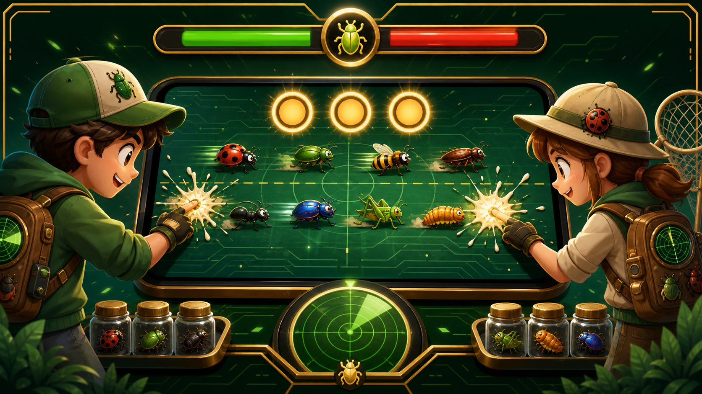
Beide spelers krijgen dezelfde seed. Je score hangt af van taps, target-keuzes en helpers.

Speel waves tegen BugBot. Boss waves vragen betere timing en een sterkere squad.
Rarity bepaalt hoeveel taps een bug in Arena nodig heeft, hoeveel score hij oplevert en hoe waardevol hij is als helper of upgrade-materiaal.
| Rarity | Taps in Duel | Score | Hitbox | Opmerking |
|---|---|---|---|---|
| Gewoon | 2 | 1 | 1.00x | Snel pakken, lage waarde. |
| Zeldzaam | 3 | 2 | 1.05x | Vaak betere keuze dan meerdere gewone bugs. |
| Episch | 5 | 4 | 1.10x | Goede score, maar kost tijd. |
| Legendarisch | 7 | 6 | 1.14x | Sterk target als je helpers/timing goed zijn. |
| Mythisch | 9 | 9 | 1.18x | Hoogste waarde en unieke helper-specials. |
Mythische bugs zijn bedoeld als einddoel. Je krijgt ze niet uit normale random rewards; upgrade 10 verschillende Legendarische bugs naar Mythisch.
Een reward heeft eerst een kans om een BugDex drop te worden. Daarna rolt de rarity. Bug Squad en Bug Lamp kunnen kleine boosts geven, maar cap blijft beperkt.
| Bron | Drop kans | Gewoon | Zeldzaam | Episch | Legendarisch | Mythisch |
|---|---|---|---|---|---|---|
| Daily login | 35% | 100% | 0% | 0% | 0% | 0% |
| Bug melden | 58% | 70% | 24% | 4.8% | 1.2% | 0% |
| Comment | 24% | 73% | 23.4% | 3.5% | 0.1% | 0% |
| Status update | 22% | 71% | 24% | 4.5% | 0.5% | 0% |
| Bug gefixt | 45% | 68% | 24% | 4.8% | 3.2% | 0% |
| Upvote gegeven | 18% | 75.2% | 24.5% | 0.3% | 0% | 0% |
| Profiel bekijken | 8% | 88% | 12% | 0% | 0% | 0% |
| Foreground bug smash | 35% | 70% | 24.4% | 4.9% | 0.7% | 0% |
| Weekly all-3 bonus | 100% | 72% | 24% | 3.5% | 0.5% | 0% |
| Duel win reward | 100% | 71% | 24% | 4.5% | 0.5% | 0% |
| Solo boss 2 | 100% | 100% | 0% | 0% | 0% | 0% |
| Solo boss 4 | 100% | 75% | 24% | 1% | 0% | 0% |
| Upgrade | 100% | 0% | route | route | route | route |
Weekly all-3 bonus betekent: je claimt de extra weekbonus pas nadat alle 3 weekly missions van die week afgerond zijn. De BugDex roll is altijd 100%, maar rare blijft onder 25% en epic onder 5%.
Duel is eerlijk door dezelfde seed: dezelfde bugs, dezelfde timing. Het verschil zit in wat je tapt, wanneer je tapt en welke helperbugs actief zijn.
30 seconden, 56 targets, score per rarity. De uitdager kan direct spelen; de tegenstander speelt later met dezelfde seed.

Je 3 actieve bugs schieten elke paar seconden. Lage rarity helpt licht, hogere rarity voelt duidelijk sterker.

Win: 10 XP. Verlies: 5 XP. Dagelijkse duel-reward telt maar 1x per dag per tegenstander.
| Mechanic | Wat gebeurt er | Waarom belangrijk |
|---|---|---|
| Combo bonus | Elke reeks catches kan extra punten geven, afhankelijk van squad. | Snel en netjes tappen wordt beloond. |
| Support bonus | Support helpers geven eindbonus op basis van score. | Maakt consistent spelen sterker. |
| Movement bonus | Movement helpers kunnen tot 3 eindpunten geven als je genoeg scoort. | Nuttig voor net-wel/net-niet duels. |
| Retry onder 30 | Lage of bugged eigen score kan opnieuw zolang de ander nog niet speelde. | Voorkomt verloren duels door een slechte submit. |
Campaign is de oefen- en progressiemode tegen BugBot. Je hebt 3 levens, boss waves elke 4e wave en later meer targets met snellere spacing.
| Level | Wave 1 | Wave 2 | Wave 3 | Boss |
|---|---|---|---|---|
| 1 | 54 | 64 | 74 | 84 |
| 2 | 66 | 78 | 90 | 104 |
| 3 | 80 | 94 | 108 | 126 |
| 4 | 94 | 108 | 124 | 144 |
| 5 | 150 | 164 | 180 | 198 |


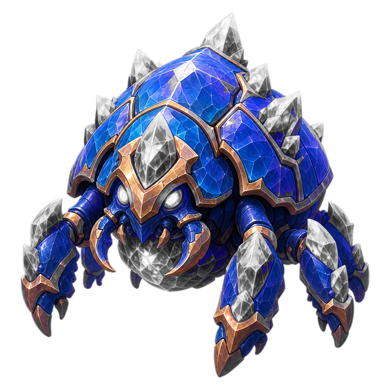
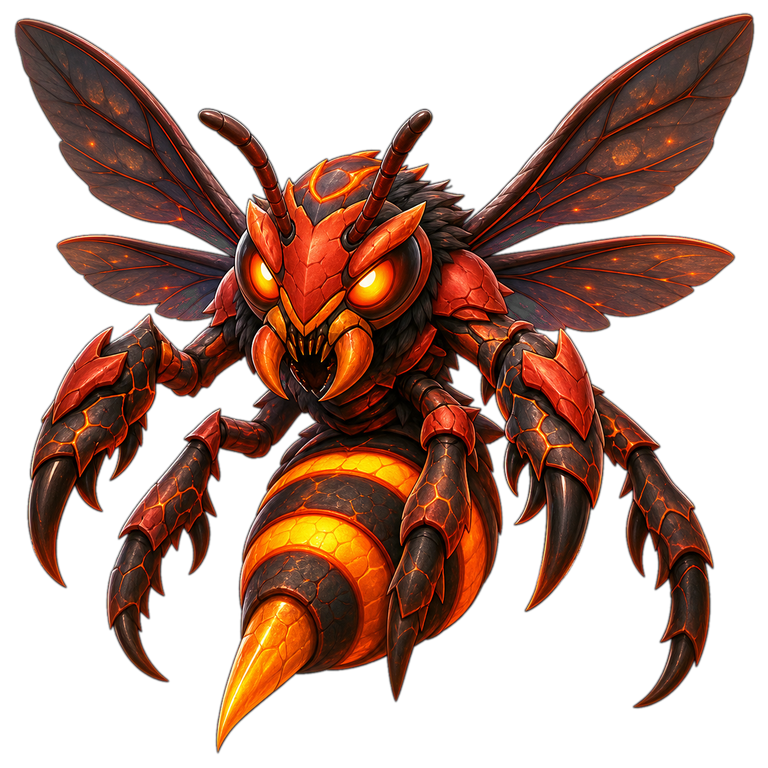

Je actieve Bug Squad bestaat uit maximaal 3 bugs. In Duel en Campaign zie je alleen de helper-towers met timerbalk; die voeren echte hits/control uit.
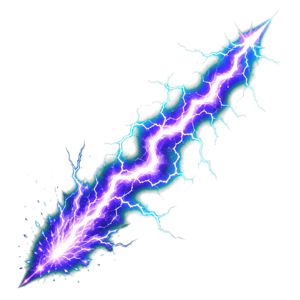
Zap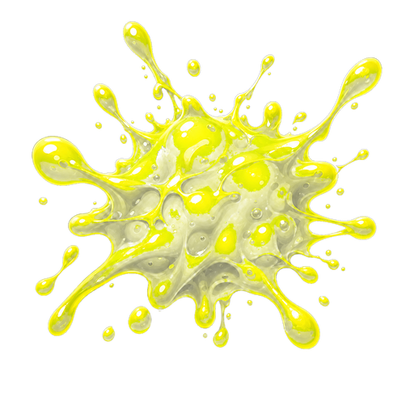
Sticky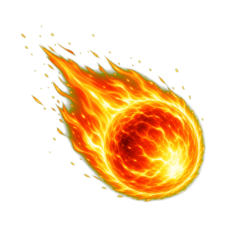
AOE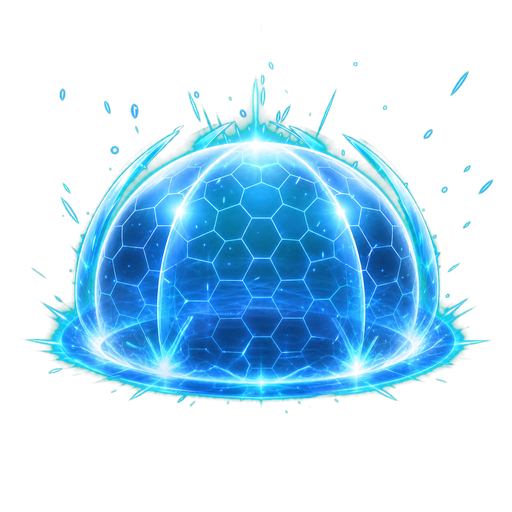
Shield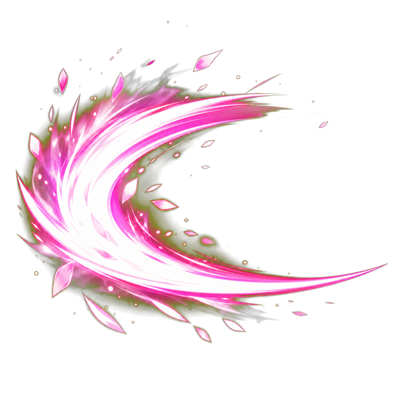
Burst Freeze
Freeze| Helper type | Effect | Typisch sterk tegen |
|---|---|---|
| Zap | Snelle hits op een belangrijke of zeldzame target. | Rare, Epic en Legendary targets. |
| Sticky | Plakt/vertraagt een target kort en doet extra hits als hij veel taps nodig heeft. | Zware targets die bijna ontsnappen. |
| AOE | Raakt doelwit plus nearby bugs; hogere rarity kan meer splash targets raken. | Groepjes gewone/zeldzame bugs. |
| Shield | Helpt op late targets en geeft guard/slow als ze ver op het scherm zijn. | Targets die bijna weg zijn. |
| Burst | Betrouwbare directe hit; tier-voordeel kan extra helpen. | Algemene cleanup. |
| Helper rarity | Base hits | Cooldown | Control bonus |
|---|---|---|---|
| Gewoon | 1 | 9.4s | 0ms |
| Zeldzaam | 2 | 7.9s | 220ms |
| Episch | 3 | 6.5s | 420ms |
| Legendarisch | 4 | 5.2s | 620ms |
| Mythisch | 5 | 4.3s | 820ms |
Mythische bugs zijn geen simpele extra damage. Elke mythic heeft een eigen rol: control, chain hits, finish damage of emergency defense. De kaarten hieronder laten per special zien wat je krijgt, wanneer je hem het best merkt en waarom hij niet te sterk wordt.
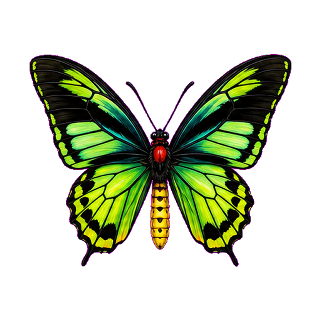
Royal Freeze
Bevriest het gekozen target en nabije bugs kort. Beste gebruik: drukke boss waves waarin je even controle nodig hebt.

Prism Chain
Ketst lichte hits door naar bugs dichtbij. Beste gebruik: groepjes Zeldzaam/Episch waar losse taps net te traag zijn.
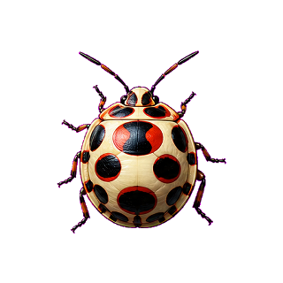
Pattern Break
Doet bonus damage op Episch+ targets. Beste gebruik: dure targets die anders te veel taps kosten voor hun score.

Candy Slow
Vertraagt een klein groepje bugs. Beste gebruik: targets die bijna uit beeld lopen terwijl je combo wilt vasthouden.
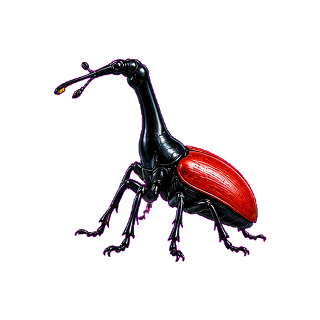
Longneck Scout
Scant naar hoge-rarity targets en geeft daar extra hits op. Beste gebruik: Legendarisch/Mythisch targets vroeg kiezen.

Bloom Blade
Finisht sterke of bijna kapotte bugs met extra slash damage. Beste gebruik: geen taps verspillen op laatste hit.
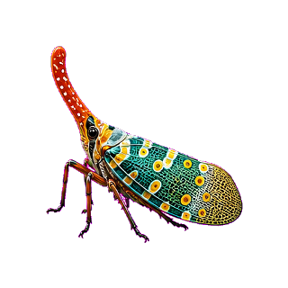
Lantern Signal
Markeert gevaarlijke targets en chain-hit extra bugs. Beste gebruik: snel bepalen welke bug nu de meeste waarde heeft.

Mirror Guard
Vangt late ontsnappers op met shield damage en korte freeze. Beste gebruik: score redden aan het einde van een wave.
| Special | Rol | Waar sterk | Bewuste beperking |
|---|---|---|---|
| Royal Freeze | Control | Drukke boss waves | Koopt tijd, geen grote damage. |
| Prism Chain | AOE/chain | Clusters met meerdere targets | Zwakt af bij losse bugs. |
| Pattern Break | Anti-rarity | Episch+ targets | Weinig waarde op gewone bugs. |
| Candy Slow | Slow | Snelle targets vlak voor ontsnappen | Vertraagt, maar killt niet vanzelf. |
| Longneck Scout | Target focus | Zware targets tussen lage spawns | Afhankelijk van goede target-keuze. |
| Bloom Blade | Finisher | Bijna-dode sterke bugs | Heeft eerst damage nodig. |
| Lantern Signal | Mark/priority | Drukke duels met veel keuzes | Kleine hulp, geen auto-clear. |
| Mirror Guard | Emergency defense | Laatste seconden | Redt alleen beperkte missers. |
Movement en widget rewards zijn bedoeld als zachte extra progressie. Ze geven kleine XP en af en toe een BugDex-kans, maar niet genoeg om alleen daarmee alles te halen.
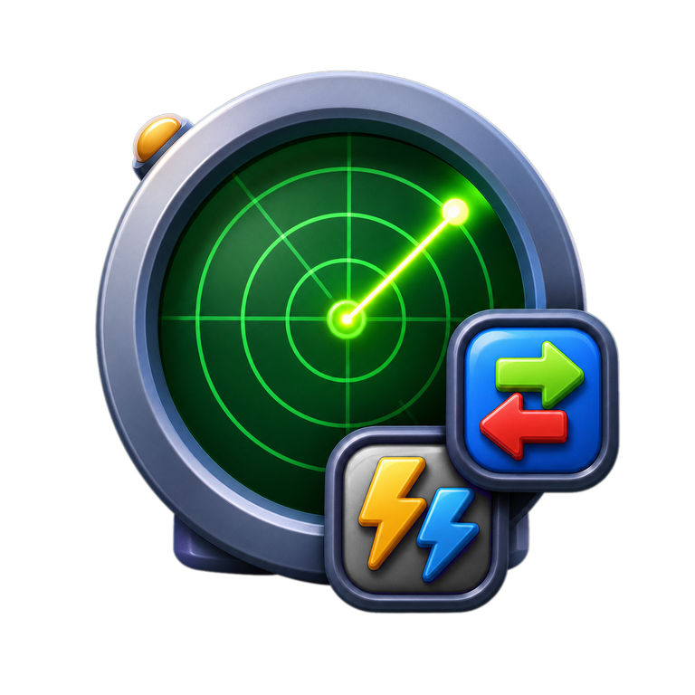
Max 3 signals per dag. Rarity roll: 71% Gewoon, 24% Zeldzaam, 4% Episch, 1% Legendarisch.
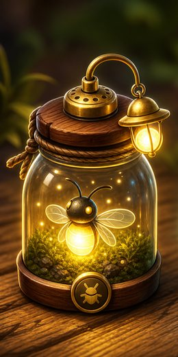
Elke 5e daily login geeft een lamp. Actief: 24 uur, movement goals halveren en +2.5% rarity boost via Gewoon naar Zeldzaam/Episch.

Boss clears geven Lamp Focus en soms Bug Bomb. Activeer ze vooraf; ze zijn niet constant zichtbaar tijdens waves.
XP is laag op spamgevoelige acties en hoger op weekdoelen. Nieuwe spelers onder 20 XP krijgen tijdelijk een starter boost.
| Actie | XP |
|---|---|
| Daily login claim | 5 |
| Duel winnen | 10 |
| Duel verliezen | 5 |
| Movement radar bug | 3 |
| Weekly mission XP | 20-25 |
| Weekly all-3 bonus | 10 + BugDex |
| Foreground catch Gewoon/Zeldzaam/Episch/Legendarisch/Mythisch | 1 / 3 / 6 / 10 / 15 |
Nieuwe of lage-XP spelers onder 20 XP krijgen 3 dagen lang 2x positieve XP en een extra onafhankelijke BugDex roll. De extra roll geeft niet twee keer dezelfde BugDex unlock in dezelfde catch-flow.
Elke week krijg je een bug/feature missie plus 7.5 km movement target. Rewards zijn vooraf zichtbaar: XP, gewone BugDex of zeldzame BugDex.
De workshop is waar duplicates waarde krijgen. Actieve helperbugs zijn gelocked zodat je niet per ongeluk je squad weggooit.

Selecteer meerdere bugs tegelijk, bijvoorbeeld 3 zeldzame voor 1 epische van iemand anders.
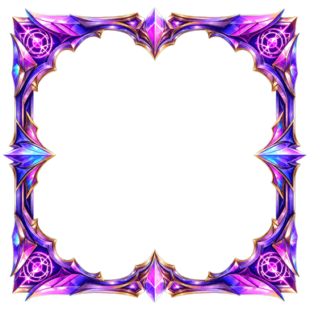
Combineer duplicates of verschillende bugs naar hogere rarity. Mythisch vereist 10 verschillende Legendarische bugs.
Als je een bug 2x hebt en 1 zit in je squad, blijft de extra copy selecteerbaar.
| Upgrade route | Nodig van vorige tier | Resultaat |
|---|---|---|
| Gewoon naar Zeldzaam | 3 verschillende Gewoon | 1 willekeurige Zeldzame bug |
| Zeldzaam naar Episch | 3 verschillende Zeldzaam | 1 willekeurige Epische bug |
| Episch naar Legendarisch | 3 verschillende Episch | 1 willekeurige Legendarische bug |
| Legendarisch naar Mythisch | 10 verschillende Legendarisch | 1 willekeurige Mythische bug |
BugBaas is niet bedoeld als alles-pakken game. Je wint door keuzes: pak hoge waarde als je tijd hebt, gewone bugs als je combo of tempo nodig hebt.